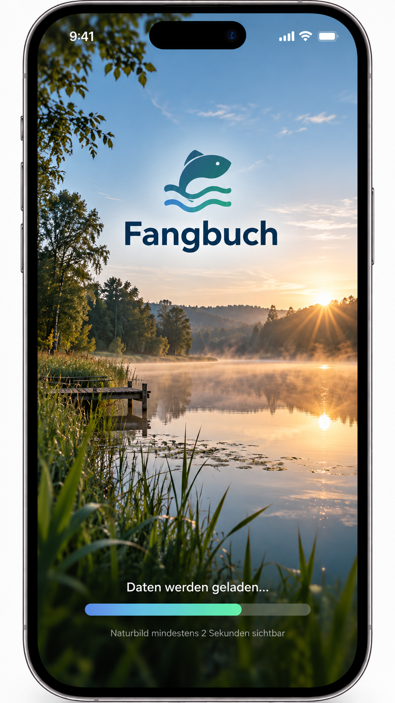

Diese Vorschau nutzt bewusst den freigegebenen Designentwurf ohne zusätzliche Designänderungen.

Beim Öffnen wird zuerst das freigegebene Splash-Startbild angezeigt. Danach wechselt die Vorschau automatisch auf den Startbildschirm. Über die Schaltflächen darunter kannst du die weiteren abgestimmten Screens direkt aufrufen.